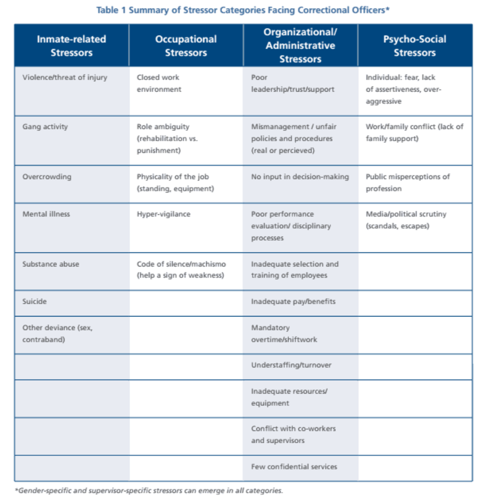

Getting the Attention they Deserve
Mental health has always been an existing topic within corrections but, studies have been overwhelmingly based on inmate populations and the pressures of prison life they experience. Within the last couple of years, Correctional Officer (CO) wellness has begun to get the increasing attention that it deserves because of the noticeable cumulative impact on this group's mental health and the high rate of suicide rates associated with it.
We do a decent job with saying that ‘this system messes with the incarcerated, this system impacts
their lives’, but what we don’t do, what we don’t say is, ‘what’s the impact that this job is having on the correctional officers?’
Correctional officers are often overlooked, but daily, these workers experience the same environments as the inmates do and often have to interact with them as well. The New Jersey Police Suicide Task Force reported in 2009 that from 2003-2007, the suicide rate for correctional officers, 34.8 per 100,000, was more than double that of police officers', 15.1 per 100,000, suicide rates; Correctional Officers'
risk of suicide was 39% higher than that of all other professions combined(
Denhof & Spinaris , 2013). Additionally, the Correctional Peace Officers Association in 2013 reported a suicide rate of 19.4 deaths per 100,000 for Correctional Officers compared with 12.6 in the general U.S. population (
Weichselbaum, 2017). There are noticeable rises in suicide rates for correctional officers, but what are the factors that lead to this? There have been few completed studies investigating the rates of depression in corrections professionals in the United States, but with the new attention on correctional officer wellness, individuals are hoping to change this.
Why are these Rates so High?
Being a correctional officer is considered a high trauma job which is associated with PTSD and high stress.
A job that has high psychological and physical demands and low social support are likely precursors to depressive
symptoms in workers (
Denhof & Spinaris , 2013). A 2013 Correctional Officer Wellness and Safety Literature Review divided up the sources of
correctional officer stress into 4 categories: inmate-related, occupational, organizational and administrative, and psycho-social stressors.
Hover over chart to enlarge. This data was taken from Brower, 2013)

Table 1 provides an overview of the specific stressors within each category. These stressors can have a severe impact on the physical and mental
health of COs. Inmate-related stressors are perhaps the most serious since they involve the threat of violence or danger for COs. COs are required to deal
with violent inmates and shabby conditions daily. The increasing prison populations and overcrowding also increase the levels of violence and therefore
stress. The National Institute of Justice found that organizational and administrative stressors are also a significant source of stress especially
with their high caseload, paperwork, and deadlines (Brower, 2013). Additionally, there have been staffing and resource shortages that put more pressure on the COs.
This backs that COs experience high demands with little social support. A correlation was found between CO stress and budget cuts, hiring freezes, and
layoffs. All of these factors add to the negative perceptions COs' have of management (Brower, 2013). As COs develop negative perceptions of management, conflict between administration and COs can begin to disrupt the system. Stress can induce serious physical medical problems such as heart disease,
hypertension, etc., while the mental medical problems can be
linked to psychological and emotional disorders.
If we don't do something about it, someone's going to pay the cost for it. And who's going to pay the cost? Your wife. Your husband. Your
significant other. Your children. Your friends. The inmate. Because you're so stressed out, you lose it one day. And when you lose it, God only
knows.
In 2014 a CO's girlfriend called warning Seabrook that her girlfriend was talking about killing herself. "She lost it," says Seabrook. "Turns out we
found a straight-edge razor in her car, she's threatening to commit suicide... Nineteen years as a New York City
corrections officer, and she says, 'I have nothing else left to live for. I'm going to cut my throat at lunchtime.'" (Lopez, 2014). Our corrections system from a mental health aspect is failing COs who have comparable PTSD to military combat veterans (Lopez, 2014). From a recent national study of 3,000 corrections professionals, 27% were suffering from PTSD which
contributes to higher levels of memory impairment, depression, obesity, and sleep-related issues (
Brower, 2013).
A 2011 logitudinal study of PTSD founded a correlation between elevated rates of full/partial PTSD and elevated suicide rates(Denhof & Spinaris , 2013).
Table 2 divides the prevalence of PTSD and depression, given that they often go together, by subgroup. These numbers only cover the percentage of the population
that experienced moderate-to-extreme symptoms. Generally though, 65% of officers, of a survey released earlier in 2017 as a part of the Correctional Officer Health and
Wellness Project, said they had experienced at least one of the sysmptoms associated with PTSD; about one in nine also reported having thought about or attempting suicide (Weichselbaum, 2017). Although the population sizes and their sampling regions differ, these numbers have caught the attention of researchers and criminal
justice reformers. There is still much research to do. With the growing interest of CO wellness and research on their mental health will pave the design of permanent
mental health programs.
Women in Corrections
Women working in corrections face additional obstacles than men do and thus deserve extra analysis. There are many arguments and assumptions as to
why women should not work as correctional officers due to historical resistance to the integration of women into a masculinized occupation (
Brower, 2013). Beliefs that women are physically weaker and can not handle working in an environment that
is predominantly male create additional stress for women in this work setting. Regardless of these arguments and beliefs, female COs have been "permitted to supervise both male and female inmates unless the males are nude for
prolonged periods of time or must come in contact with male genitalia" under the Civil Rights Act of 1964, Title VII (
Mann, 2016). They now make up nearly 30 percent of correctional employees (
Chandler, 2018). Melissa Mann who has 18 years of experience in Corrections, Community Policing and more,
discusses some of her first hand experiences in her article
"Women in corrections face a number of obstacles".
Mann describes being called "sweetie" and "sexy" and "man hater" by male supervisors not by inmates, so there
is a gender-bias within the hierarchy of the workers. Female officers are more likely than their male counterparts to identify their supervisors as a contribution
to stress in the workplace (Brower, 2013). Women also experience harassment and discrimination by their colleagues and inmates. In Florida, a female correctional
officer had reported being sexually assaulted by 17 inmates:
I was devastated. I was traumatized. I was physically and sexually assaulted
This is not the only case of sexual harrassment a female CO has reported. Taronica White successfully filed a class-action lawsuit for sex discrimination and a hostile work environment at the
nation's largest federal prison complex settling for $20 million and 20 pages worth of procedural changes to improve safety, including improved sexual harrassment training (
Chandler, 2018). When White first joined the workplace at a new maximum security prison, she felt a
culture shock. She had worked at four other state and federal prisons, but when she got to the new maximum security prison in Coleman she felt the need to conform
to the environment.
You change the way you think, the way you dress, the way you look. Even your soap -- you want to make sure you use unscented soap; whatever means you will bring less attention to yourself
White noticed that men were often not disciplined or held accountable and basic procedures were not being followed. White's case helped shed light on some of
the additional issues female COs face in the system from the inmates or coworkers. All these factors serve as additional stressors for women working in a
male-dominated field.
What is being done or can be done?
In May of 2017, Senate unanimously passed the Law Enforcement Mental Health and Wellness Act. This act calls the Department of Defense and Department of Veteran Affairs to share a list of recommended mental health practices/services with Congress while supporting law enforcement agency efforts to protect mental health and the well-being of law enforcement officers ( Law Enforcement Mental Health and Wellness Act", 2017). Unfortunately, what the bill does not require is the tracking of police suicides, similarly CO suicides(Weichselbaum, 2017). More research is also underway to fill the gap of this underreported sector and
to provide data to support proposals of reform. One example, is the work the California peace officers
association is taking to partner with University of California, Berkeley to commit surveys of more than 8,600 corrections and parole officers across the state. Using the data, there will then be a baseline to develop and implement mental health services in response. The survey asks about officers'
experiences with violence, PTSD, suicidal thoughts, and their ideas for improving prisons (Weichselbaum, 2017). Additionally, the Correctional Officer Health and Wellness Project is working to include in-prison focus groups with COs and
integrate randomized experiments testing possible mental health services for COs like increased access to peer support officers and training or stress management (Weichselbaum, 2017).